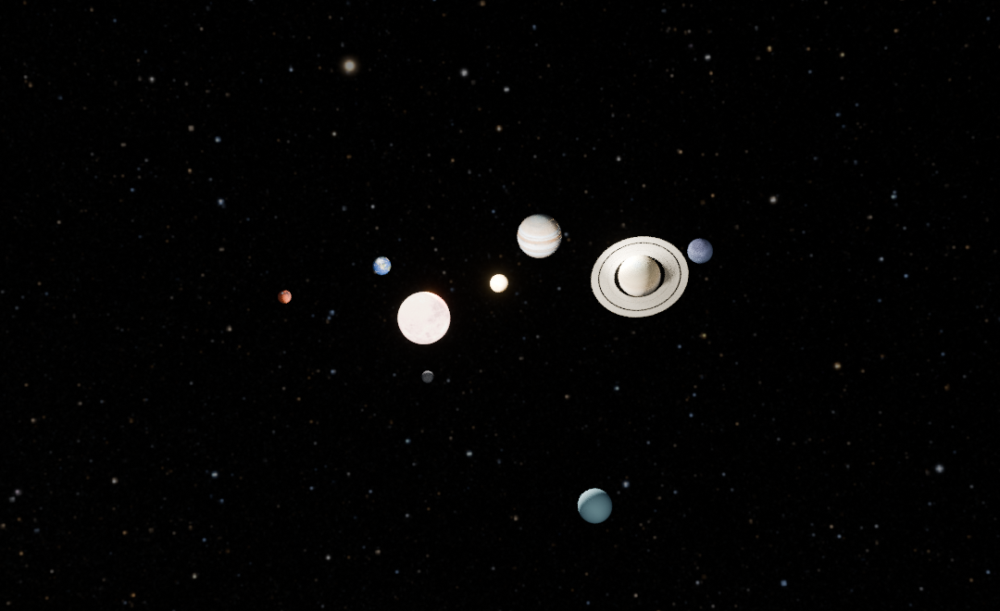

LI CONGYU / 3D EXPLORATION / 2026
太阳系，
从这里出发。
一颗恒星，八个世界。
拖动视角，探索我们的宇宙邻里。
正在加载 Blender 三维模型…
进入太阳系正在载入模型与纹理 · 约 9 MB

当前设备暂时无法显示三维模型，可继续查看下方渲染预览，或下载模型。
第 180 帧拖动旋转 · 滚轮 / 双指缩放
ABOUT THE PROJECT
把想象，放进三维空间。
这是一项 AI 辅助的三维创作实践。从太阳与八颗行星的建模、材质，到土星环、大气、星空与观察相机，逐步搭建一个可以探索的太阳系。
网页加载的是从 Blender V3 工程导出的模型，支持旋转、缩放、天体聚焦与动画播放。下方图片保留 Blender 的渲染效果，便于对照观察。
渲染预览
BLENDER / STILL FRAMES关于比例与资料
本作品采用展示比例，行星已放大、距离已压缩；初始位置为示意排布。公转采用固定轨道元素与开普勒方程，不对应现实日期的精确星历。网页采用轻量材质和照明，大气散射、环阴影与辉光等效果与 Blender 渲染存在差异。
星图：NASA / Goddard SVS · Deep Star Maps 2020，Gaia DR2：ESA/Gaia/DPAC，Ernie Wright (USRA)。行星纹理：Solar System Scope · CC BY 4.0。轨道元素：NASA / JPL。